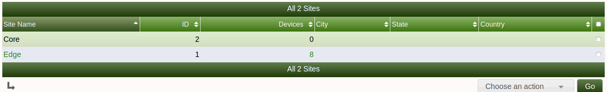
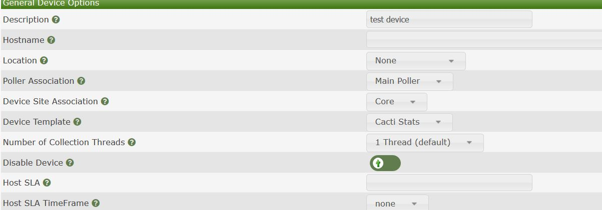
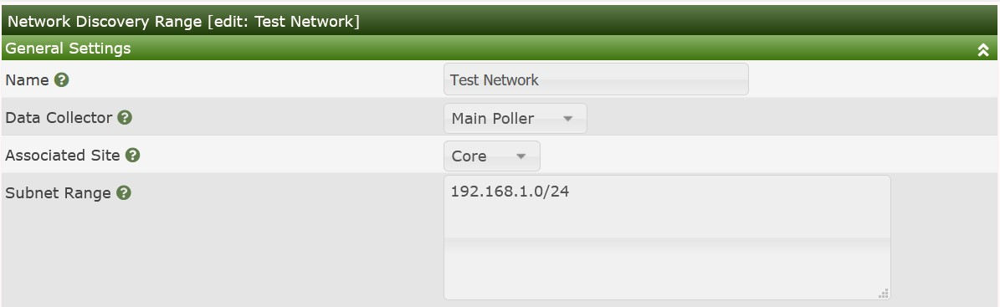

.
.This section will describe Site management in Cacti.
Sites in Cacti can be used to separate different parts of your company with the respective location devices. For example, you can have a site called 123 main street in which you can associate all of the devices that are in the physical location to the Cacti site. This could also be a customer site or data center location
.
Below is an example of some of the attribute data you can enter for the site/location
Enter the appropriate information for the site and click create on the below right side
.
Once you have created a site while you are creating a device manually you can now associate the device to the site
.
You can also associate the discovered devices via automation to a particular site.
.
Copyright (c) 2004-2024 The Cacti Group